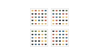
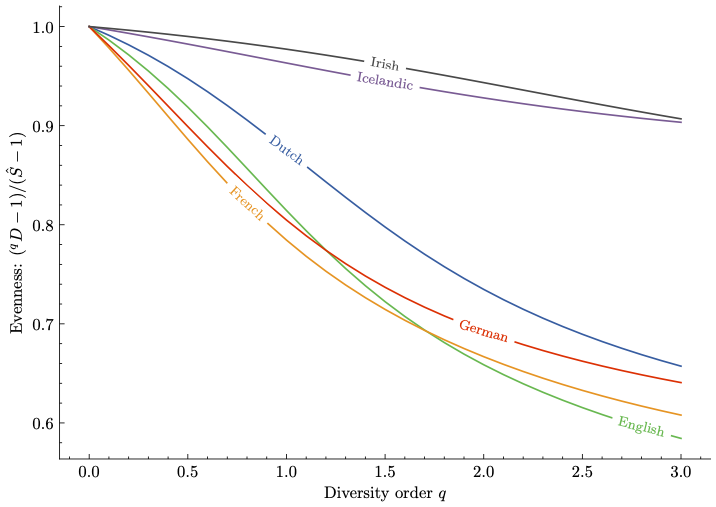
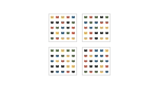
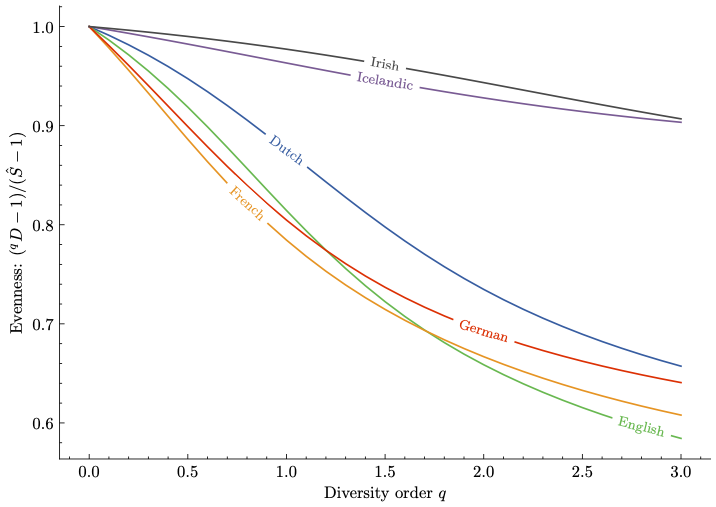

NEWS
We recently published an article in Science about estimating the amount of medieval lost books using ecological models. Check out the paper here. As part of our communication efforts, we also created an accompanying website, which provide some additional details about the project. Last but not least, we made an author explanation video, in which collaborators involved in this project provide a high-level explanation of our project and results.
Selected Publications
Forgotten Books: The Application of Unseen Species Models to the Survival of Culture. Science (2022)
In this project, we show that unseen species models from ecology can be used to estimate the loss rates of cultural artefacts. For medieval literature (chivalric and heroic narratives in particular) we obtain survival estimates which are compatible with prior research and which emphasize the severity of the loss in this domain. Comparison of results between languages highlights interesting differences in literary survival patterns across European medieval vernaculars.
 



Humanities Data Analysis. Case Studies with Python. Princeton University Press (2021)
Humanities Data Analysis: Case Studies with Python is a practical guide to data-intensive humanities research using the Python programming language. I have written the book together with Mike Kestemont and Allen Riddell. It was originally published with Princeton University Press in 2021 (for a printed version of the book, see the publisher's website), and is now available as an Open Access interactive Juptyer Book.
Classifying Evolutionary Forces in Language Change Using Neural Networks. Evolutionary Human Sciences (2020)
This study is about discriminating neutral processes of cultural change (drift) from non-neutral processes (selection). To this end, we investigate how Neural Networks can assist in learning which aspects of time series are distinctive for drift and selection. We compare the model with a statistical test, and demonstrate how the neural classifier solves crucial issues with that test.
Cultural Entrenchment of Folktales is Encoded in Language. Palgrave Communications (2019)
In this article, we explore the understudied effects of growing cultural entrenchment on the form of stories with a long reproduction history. Drawing on insight from literary theory, theoretical linguistics, and cultural evolution theory, we argue that changes in the cultural entrenchment of fairy tales and folk stories are reflected in (small) structural 'mutations' in the story.
Software
Copia is a statistical software package for estimating diversity and richness on the basis of abundance data. The package contains several bias-correcting richness estimators, such as the Chao1 and the Jacknife estimator.
HDA provides all code listed in Humanities Data Analysis. Each file in this repository contains the code used or discussed in one chapter.
→ See my GitHub profile for more software, tutorials and code accompanying my articles.